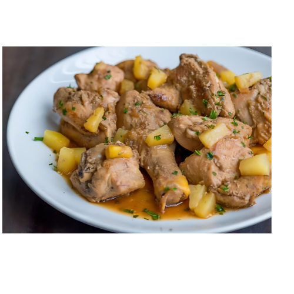

Chicken Hamonado
Chicken Hamonado is a popular Filipino dish characterized by its sweet and savory flavor profile, often enjoyed during festive occasions and family gatherings. The term "hamonado" comes from the Spanish word "hamon," meaning ham, and it refers to the sweet and savory glaze typically used in cooking. In this dish, chicken pieces are marinated in a mixture of soy sauce, pineapple juice, and brown sugar, which gives it a delightful sweetness reminiscent of traditional ham.
The chicken is usually cooked until tender and coated in a thick, glossy sauce made from the marinade, often thickened with cornstarch. Commonly accompanied by bell peppers and sometimes pineapple chunks, Chicken Hamonado is typically served with steamed rice, allowing the sweet sauce to complement the dish perfectly. Its unique blend of flavors makes it a festive favorite, celebrating the influence of both local and Spanish culinary traditions in Filipino cuisine.
Origin
Chicken Hamonado has its origins in the rich culinary history of the Philippines, particularly influenced by Spanish colonization in the 16th century. The term "hamonado" refers to a cooking style that derives from the Spanish word "jamón," meaning ham. This dish reflects the blending of indigenous Filipino cooking practices with Spanish culinary traditions, particularly the use of sweet and savory flavors.
Originally, the hamonado style was applied to pork dishes, often featuring a sweet glaze that resembled that of traditional ham. Over time, the recipe adapted to include chicken, making it more accessible and appealing to a wider audience. The use of ingredients like pineapple juice, soy sauce, and brown sugar in the marinade showcases the Filipino affinity for combining flavors, resulting in a dish that is both sweet and savory.
Today, Chicken Hamonado is popular for special occasions, family gatherings, and celebrations, reflecting the country's vibrant food culture and the influence of both local and Spanish culinary traditions. Its sweet and savory taste has made it a beloved comfort food in many Filipino households.
Ingredients
- 1 kg (about 2.2 lbs) chicken pieces (legs, thighs, or a mix)
- 1/2 cup soy sauce
- 1 cup pineapple juice (preferably fresh)
- 1/4 cup brown sugar
- 1/4 cup cooking oil
- 1 medium onion, sliced
- 4 cloves garlic, minced
- 1-2 bay leaves
- 1 medium bell pepper, sliced (optional)
- 1 cup pineapple chunks (optional)/li>
- Salt and pepper to taste
- 1-2 tbsp cornstarch (optional, for thickening the sauce)
- Water (as needed)
How to Cook
- In a large bowl, combine the chicken pieces, soy sauce, pineapple juice, brown sugar, minced garlic, and bay leaves. Mix well to ensure the chicken is evenly coated.
- Cover and marinate in the refrigerator for at least 30 minutes, or preferably 2 hours to overnight for better flavor.
- In a large pan or pot, heat the cooking oil over medium heat.
- Add the sliced onions and sauté until they are translucent.
- Remove the chicken from the marinade (reserve the marinade for later) and add the chicken pieces to the pan. Brown the chicken on all sides for about 5-7 minutes.
- Once browned, pour in the reserved marinade, bring to a boil, then reduce the heat to low.
- Add the bell pepper and pineapple chunks (if using). Cover the pot and let it simmer for about 30-40 minutes, or until the chicken is cooked through and tender. Stir occasionally and add water if needed to maintain the desired consistency.
- If you prefer a thicker sauce, mix cornstarch with a small amount of water to create a slurry. Stir it into the simmering sauce and cook for an additional 2-3 minutes until thickened.
- Taste the sauce and adjust the seasoning with salt and pepper as needed. The sauce should be a delightful balance of sweet and savory flavors.
- Once done, remove from heat and let it rest for a few minutes. Serve hot over steamed rice, allowing the delicious sauce to soak into the rice.